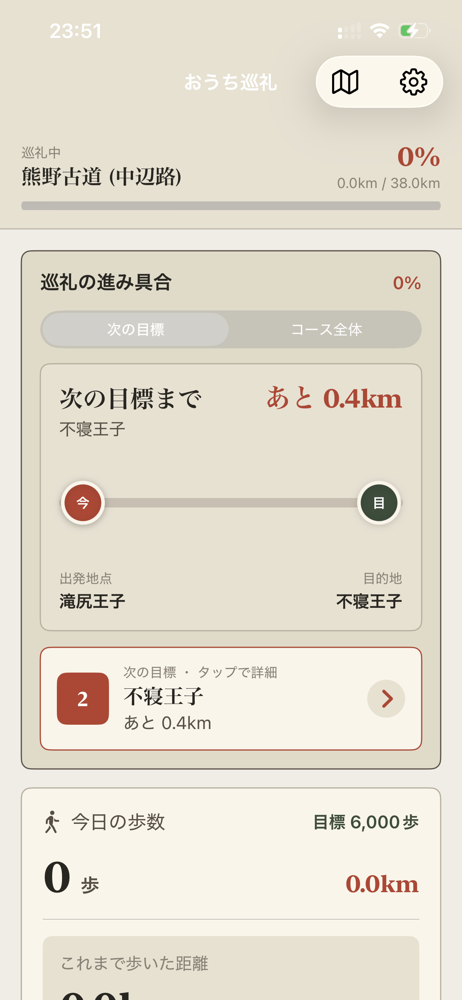
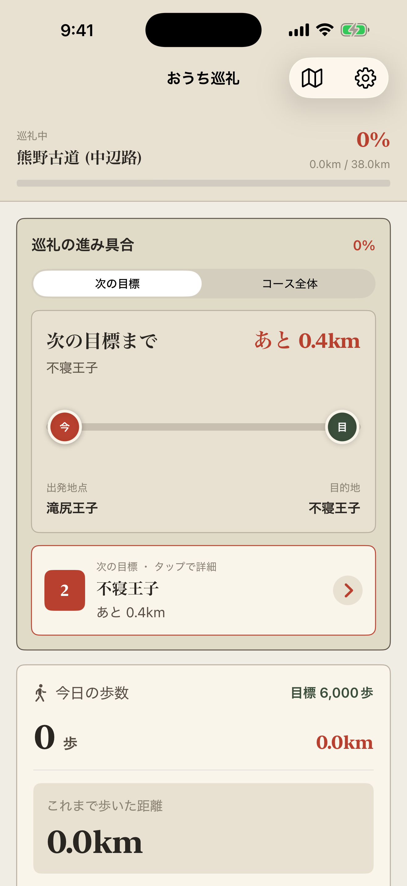
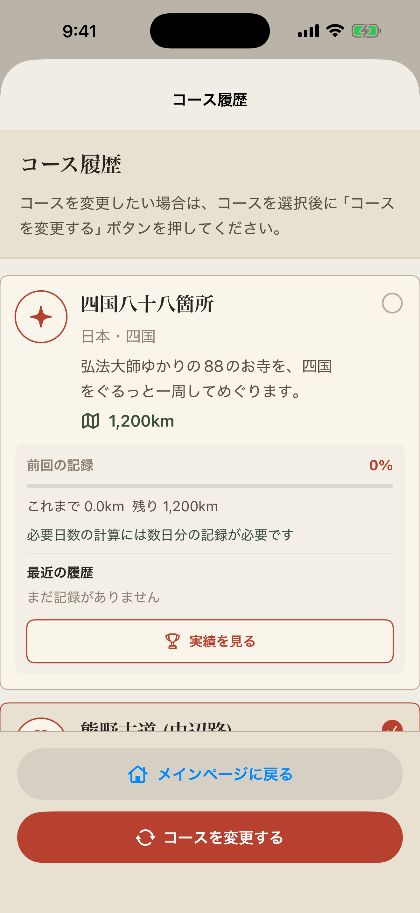
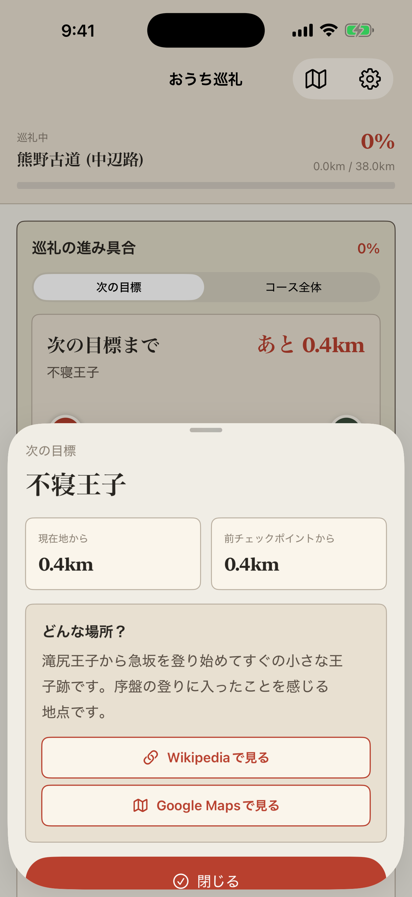

歩くだけで進みます
Appleヘルスケアの歩数を使い、今日の歩きとこれまでの距離を自動で反映します。
iOS歩数計アプリ
毎日の歩数を、巡礼路を進む距離に置き換えて楽しむアプリです。実際の現在地は使わず、ヘルスケアの歩数から仮想の進み具合を表示します。

Appleヘルスケアの歩数を使い、今日の歩きとこれまでの距離を自動で反映します。
四国八十八箇所、熊野古道、サンティアゴ巡礼路から選び、途中で別コースに切り替えることもできます。
通過済みのチェックポイントは到達記録として残り、場所の紹介をあとから見返せます。



画面内容は提出前の最終ビルドで再確認します。
使いません。位置情報で追跡するアプリではなく、歩数から換算した仮想の進み具合として表示します。
送信しません。歩数、進捗、履歴は端末内に保存され、アプリ内の表示にのみ使用します。
ありません。おうち巡礼は、許可された歩数データの読み取りだけを行います。
変えられます。各コースの進み具合は保存されるため、前回の中断地点から再開できます。
できます。現在のコースだけをリセットする方法と、すべてのコース選択と進捗をリセットする方法があります。
チェックポイント詳細から、ユーザー操作で外部のGoogle Mapsを開くことがあります。アプリ内で現在地を追跡するものではありません。
最終更新日: 2026-04-29
ユーザーが許可した場合に限り、Appleヘルスケアから今日の歩数と、アプリで進捗計算に使う期間の歩数を読み取ります。ヘルスケアへデータを書き込みません。
歩数データは、巡礼コース上の進み具合、今日の歩数、これまで歩いた距離、残り距離、到達済みチェックポイントの表示にのみ利用します。
歩数、コース履歴、チェックポイント到達状況は外部サーバーへ送信しません。これらの情報はユーザーの端末内に保存されます。
ユーザーの歩数や利用状況を第三者へ提供しません。また、広告目的のトラッキングを行いません。
チェックポイント詳細からGoogle Mapsなどの外部サービスを開く場合があります。外部サービス利用時の情報の取り扱いは、各サービスのポリシーに従います。
アプリ内の設定から、現在のコースの進捗、またはすべてのコース選択と進捗データをリセットできます。アプリ削除時も端末内の本アプリデータは削除されます。
プライバシーに関するお問い合わせは、本ページ下部のメール窓口までお願いします。